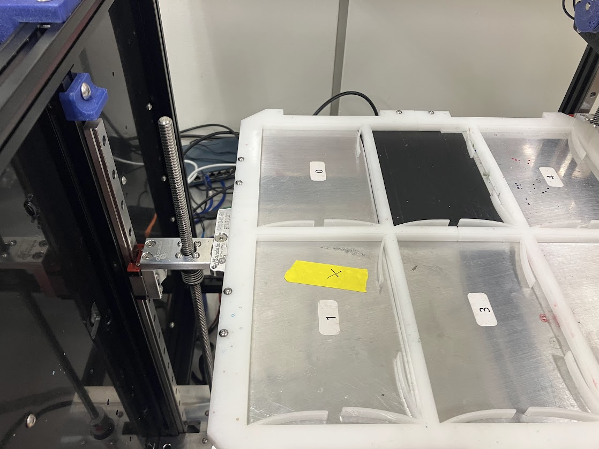
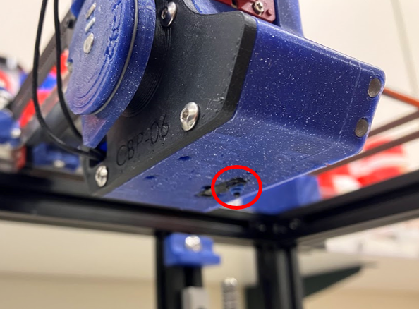
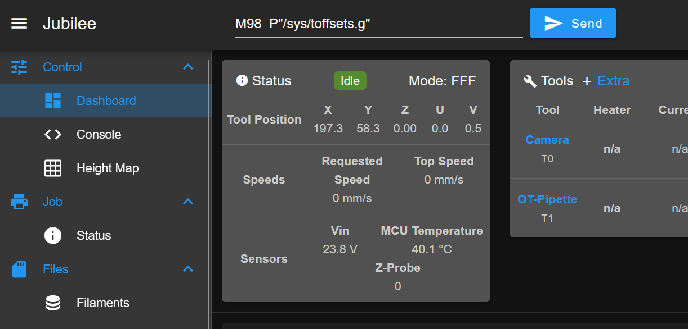
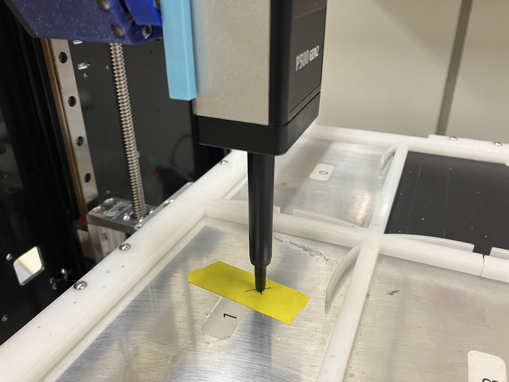

Setting Tool Offsets
Once you have defined your tool in the Duet config file and set tool parking post positions, the last step in setting up a new tool is to set offsets. Tool offsets record the location of the ‘active point’ of the tool relative to the z-probe on the tool carriage, which is Jubilee’s default reference point. Accurate offsets allows Jubilee to position each tool using the same coordinate system. For example, if your experiment involves pipetting reactants into a wellplate’s ‘A1’ well, then recording the reaction in that well with a spectroscopy probe, accurate offsets will allow Jubilee to position both tools over the center of well A1.
Skills and capabilities needed
Interacting with Jubilee over Duet web control
Editing gcode configuration files
Equipment and supplies needed
A tool, with parking post positions already set
Some masking or label tape
A fine-point pen
Set up your toffsets.g file
Offsets should be set in a config file called toffsets.g. Depending on how you initially set up your Jubilee, you may have tool offsets defined in config.g. We reccomend storing them in toffsets.g, because this allows you to update the tool offset values without restarting (and re-homing) your machine. This will make your life far easier if you are setting up multiple tools. Set the offsets of your tool to all zeros for now.
Tip
If you are updating offsets on an existing tool, set the existing offsets to 0. This will make the math much easier later.
To move to the toffsets.g format:
Remove any
G10commands from your Jubilee’sconfig.gfileAdd the line
M98 P"/sys/toffsets.g"to the end of yourconfig.gfileSave your
config.gfileCreate a file called
toffsets.gin:/syson the Jubilee duet file system.For every tool you have defined, add the line
G10 P{tool_index} X0 Y0 Z0to thetoffsets.gfileSave
toffsets.gand restart your Jubilee
From now on, any time your make changes to a tool offset value in toffsets.g, you can load the new value by running the command M98 P"/sys/toffsets.g" from the g-code command line in duet web control.
Determine your tool’s active point
The active point of the tool is the relevant reference point on the tool for the tool’s functionality. For a pipette tool, this is the tip of the pipette barrel (without a tip attached). For a spectroscopy probe, this would be the optical tip. For a camera, this is likely the center of the field of view, but this will depend on the downstream software use.
Place an X on the Jubilee bed
Using the masking tape and a pen, draw and ‘X’ on the bed somewhere. This will be your reference point for calculating offsets. Position the ‘X’ such that the bed can be raised to touch the tool carriage without the lab automation deck plate interfering, and so that the active point of the tool can reach it. Beyond this, the exact position does not matter.

Record ‘X’ position with Jubilee reference point
Record the location of the X relative to the Jubilee tool reference point, which is the z-axis limit switch.

The limit switch on the underside of the tool carriage is the default reference point.
Make sure no tools are picked up or active
Position the tool carriage over the ‘X’ you marked
Carefully line up the tool carriage’s Z axis limit switch over the X. This will require squinting and viewing the limit switch from different angles. A flashlight may be helpful as well.
Record the X and Y position of the tool carriage for later use.

Record the position reported on the Duet web control dashboard.
Pick up your tool
Warning
The bed will not automatically drop when you pick up the tool because you have not set up Z offsets yet. MAKE SURE TO DROP THE BED SO THAT IT CLEARS THE TOOL before picking up the tool.
Drop the bed such that the tool will clear it when picked up
Pick up the tool by running the
T{toolindex}command
Position your tool over the ‘X’
As before with the Jubilee z-axis limit switch, position the active point of your tool directly over the ‘X’ mark. The tool should be directly over the X. Raise the bed until it is just barely not touching the tip of the tool.
Record the XYZ position of the tool

Calculate tool offsets from recorded positions
To calculate the offsets, subtract the tool position from the carriage position.
Example:
Carriage reference point position: (X = 196.9, Y = 58.6, Z = 0)
Tool reference point position: (X = 198.0, Y = 19.6, Z = 100.8)
Axis |
Carriage position |
Minus |
Tool position |
Equals |
Tool offset |
|---|---|---|---|---|---|
X |
196.9 |
- |
198.0 |
= |
-1.1 |
Y |
58.6 |
- |
19.6 |
= |
39.0 |
Z |
0 |
- |
100.8 |
= |
-100.8 |
Update tool offsets
Update the tool offsets in the appropriate line of your toffsets.g file. If the above calculated offsets were for tool index 1, the updated G10 command would look like G10 P1 X-1.1 Y39.0 Z-100.8.
Verify offsets were set correctly
Load the new tool offsets by running
M98 P"/sys/toffsets.g"If your did not move your tool, it should still be located directly over the ‘X’ mark. The position reported for the tool from the Duet web control interface should now be the same as the position you recorded for the empty carriage.
That’s it!
Notes
If you have multiple tools on your machine, it is best to update offsets for each tool every time you do offsets for any tool. This will help cancel out any errors or uncertainty in the tool carriage reference point position determination step.
If you have a fleet of tools to align, frequently reconfigure your machines, or just hate repetitive manual tasks that could be automated, consider using tool alignment with machine vision to automate the alignment process.